Consul是一款由HashiCorp公司开源的，用于服务治理的软件，Spring Cloud Consul对其进行了封装。Consul具有如下特点:
服务注册 - 自动注册和取消注册服务实例的网络位置
运行状况检查 - 检测服务实例何时启动并运行
分布式配置 - 确保所有服务实例使用相同的配置
Consul agent有两种运行模式：Server和Client。这里的Server和Client只是Consul集群层面的区分，与搭建在Cluster之上 的应用服务无关。 以Server模式运行的Consul agent节点用于维护Consul集群的状态，官方建议每个Consul Cluster至少有3个或以上的运行在Server mode的Agent，Client节点不限。
安装Consul
Consul下载地址：https://www.consul.io/downloads.html，本文选择Linux 64bit 版本进行演示。
下载后解压，然后在解压目录下运行./consul命令：
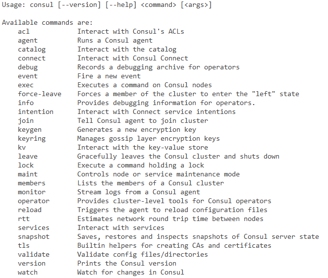
可以看到Consul所包含的命令，使用consul [命令] --help可以查看某个命令的具体用法。
执行下面这条命令来启动一个Consul agent：
1 | ./consul agent -dev -client 192.168.140.215 |
-dev表示创建一个开发环境下的server节点，不该模式下会有任何持久化操作，即不会有任何数据写入到磁盘，所以这个模式适合用于开发过程，而不适用于生产环境。-client 192.168.140.215表示运行客户端使用ip地址192.168.140.215（本文Linux环境IP地址）去访问。
启动后，默认的端口号为8500，访问http://192.168.140.215:8500
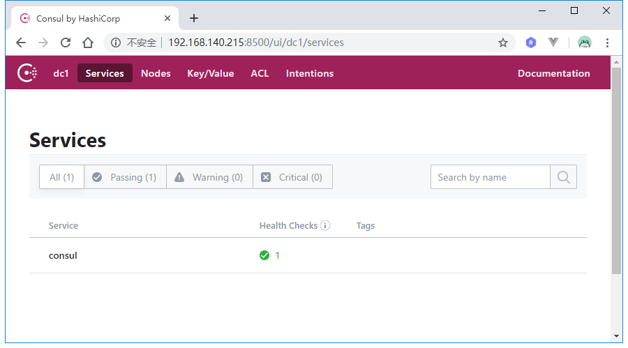
当前就一个consul服务。接下来我们开始创建服务提供者和服务消费者。
Server-Provider
创建一个Spring Boot项目，版本为2.0.2.RELEASE，artifactId为server-provider，Spring Cloud版本为Finchley.RELEASE：
1 | <properties> |
然后在配置文件里添加如下配置：
1 | server: |
spring.cloud.consul.host和spring.cloud.consul.port配置了consul的ip和端口；spring.cloud.consul.discovery.service-name配置了该服务在consul里注册的服务名称；spring.cloud.consul.discovery.register-health-check用于开启健康检查，spring.cloud.consul.discovery.health-check-interval配置了健康检查的周期为10秒，spring.cloud.consul.discovery.health-check-path配置了健康检查路径。
接着新建TestController：
1 |
|
check方法用于监控检查，TestController还提供了一个hello方法，以供后续服务消费者调用。
spring.cloud.consul.discovery.health-check-path的默认值为/actuator/health，如果采用该默认值的话，还需要导入spring-boot-starter-actuator依赖。
最后，要开启服务注册与发行，需要在Spring Boot入口类上添加@EnableDiscoveryClient注解：
1 |
|
准备完毕后，打包项目，然后启动两个实例，端口号分别为9000和9001，启动后，再次访问consul管理界面：
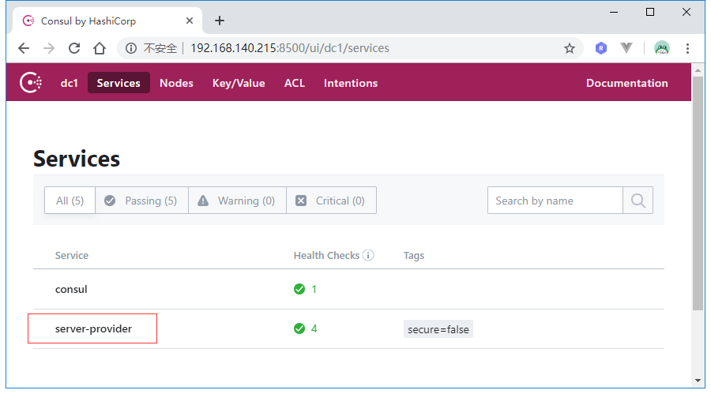
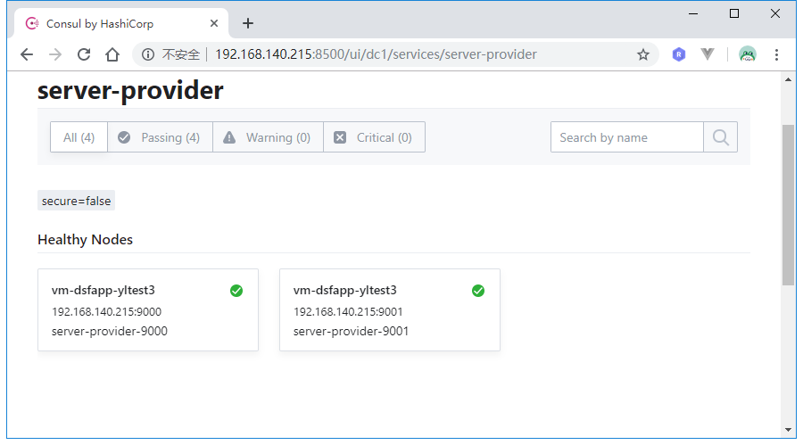
服务提供者注册成功，接下来开始搭建服务消费者。
Server-Consumer
创建一个Spring Boot项目，版本为2.0.2.RELEASE，artifactId为server-provider，Spring Cloud版本为Finchley.RELEASE：
1 | <properties> |
引入spring-boot-starter-actuator用于默认的健康检查。
配置application.yml：
1 | server: |
同样的，需要开启服务注册与发现需要在入口类上添加@EnableDiscoveryClient注解。
接着创建TestController来消费Server-Provider提供的hello服务：
1 |
|
SERVER_ID的值为服务提供者在consul注册中心的实例名称，即server-provider。通过DiscoveryClient我们可以获取到所有名称为server-provider的服务实例信息。通过LoadBalancerClient我们可以实现负载均衡地去获取服务实例，并通过RestTemplate去调用服务。
打包部署项目，然后查看consul控制台：
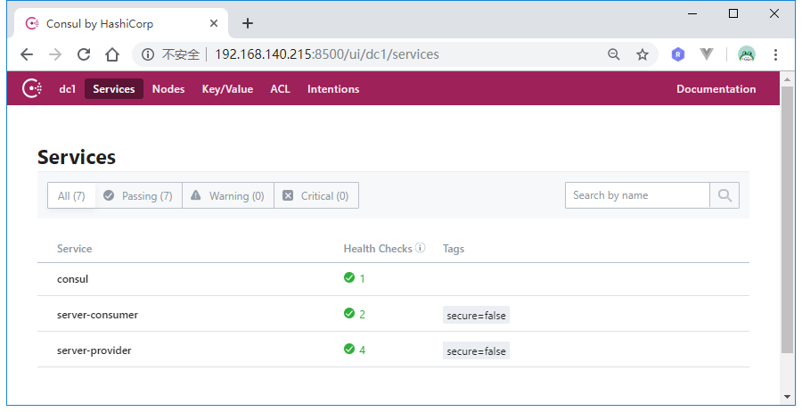
访问：http://192.168.140.215:9002/uri：
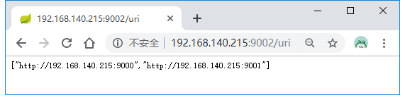
可以看到我们成功获取到了服务名称为server-provider的两个具体实例。
多次调用http://192.168.140.215:9002/hello：
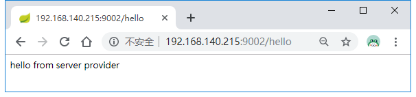
控制台输出如下：
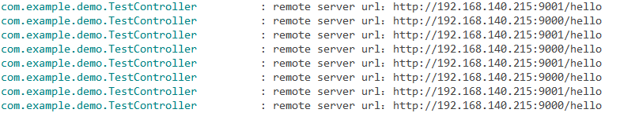
服务调用是均衡的。
除此之外，consul内置了Ribbon，所以我们还可以通过@LoadBalanced标注的RestTemplate来实现负载均衡服务调用：
1 |
|
效果是一样的。
consul集群
上面我们只是以-dev模式开启了一个单节点consul agent，生产环境下需要搭建consul集群来确保高可用。
搭建consul集群时常用的命令有:
| 命令 | 解释 | 示例 |
|---|---|---|
| agent | 运行一个consul agent | consul agent -dev |
| join | 将agent加入到consul集群 | consul join IP |
| members | 列出consul cluster集群中的members | consul members |
| leave | 将节点移除所在集群 | consul leave |
准备了三台Linux服务器，配置如下：
序号 | 节点ip | 节点名称 | 角色 |
|---|---|---|---|
1 | 192.168.140.215 | consul-server-215 | server |
2 | 192.168.140.213 | consul-server-213 | server |
3 | 192.168.140.216 | consul-server-216 | server & web ui |
在这三台服务器上下载并解压consul，然后在解压的根目录上创建一个data目录。
由于我们之前已经在215上启动了consul，所以先执行killall consul来杀掉进程，然后执行下面这条命令：
1 | nohup ./consul agent -server -bind 192.168.140.215 -client=0.0.0.0 -bootstrap-expect=3 -data-dir=data -node=consul-server-215 & |
解释一下上面这条命令的含义:
-server表示以服务的形式启动agent-bind表示绑定到当前Linux的ip（有些服务器会绑定多块网卡，可以通过bind参数强制指定绑定的ip）-client指定客户端访问的ip（consul有丰富的api接口，这里的客户端指浏览器或调用方），0.0.0.0表示不限客户端ip-bootstrap-expect=3表示server集群最低节点数为3，低于这个值将工作不正常(注：类似zookeeper一样，通常集群数为奇数，方便选举，consul采用的是raft算法)-data-dir表示指定数据的存放目录（该目录必须存在）-node表示节点的名称
接着在213服务器上执行下面这条命令：
1 | nohup ./consul agent -server -bind 192.168.140.213 -client=0.0.0.0 -bootstrap-expect=3 -data-dir=data -node=consul-server-213 & |
最后在216上执行下面这条命令：
1 | nohup ./consul agent -server -bind 192.168.140.216 -client=0.0.0.0 -bootstrap-expect=3 -data-dir=data -node=consul-server-216 -ui & |
和前两条命令相比，这条命令多了-ui选项，表示开启管理界面UI。
然后分别在213和215下执行下面这条命令：
1 | ./consul join 192.168.140.216 |
这样213和215成功加入到了216构成了一个三节点集群，运行./consul members查看：
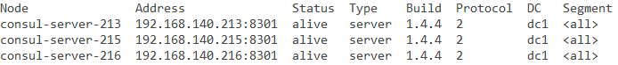
访问http://192.168.140.216:8500：
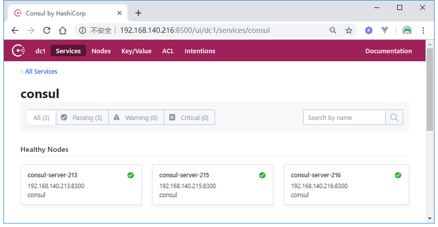
访问http://192.168.140.215:9002/hello：
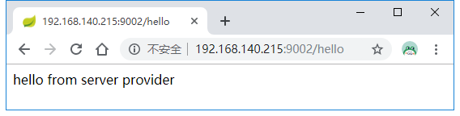
这时候在215执行killall consul命令，杀死consul服务，然后在216上执行./consul members：
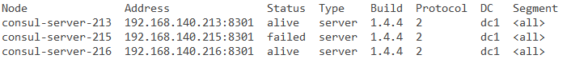
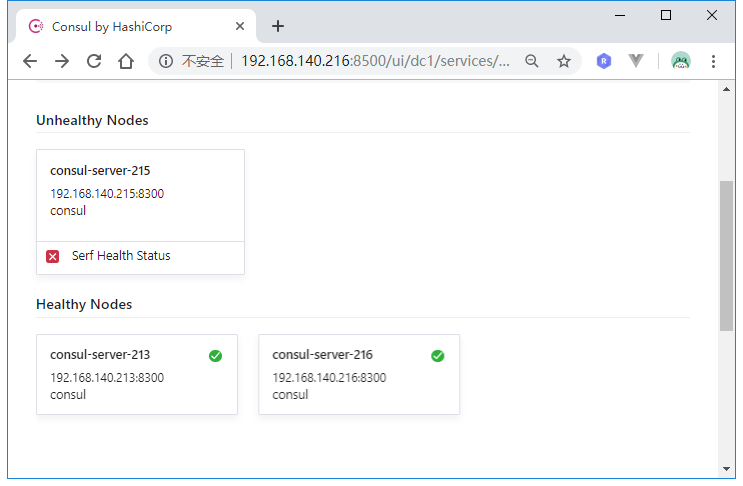
可以看到215节点已经挂了，再次访问http://192.168.140.215:9002/hello：
服务依旧获取成功。
可见，虽然我们在application.yml中配置consul的地址是192.168.140.215:8500，但由于我们构建的是consul集群，所以微服务启动时会获取到整个集群信息，即使215这个节点挂了，微服务可以从别的consul节点上获取注册的服务信息。
参考文档：
https://learn.hashicorp.com/consul/getting-started/install.html
https://cloud.spring.io/spring-cloud-consul/spring-cloud-consul.html#spring-cloud-consul-hystrix
源码链接：https://github.com/wuyouzhuguli/SpringAll/tree/master/55.Spring-Cloud-Consul